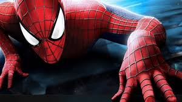
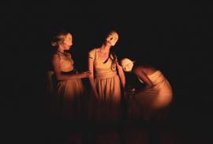
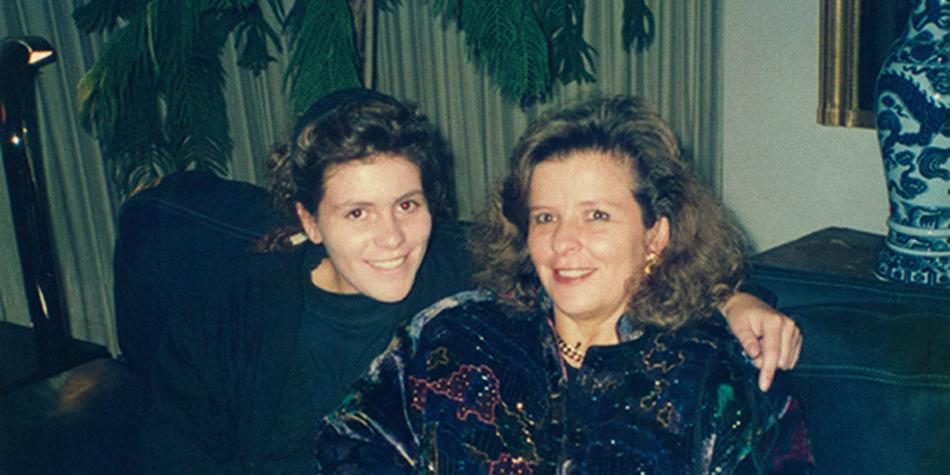
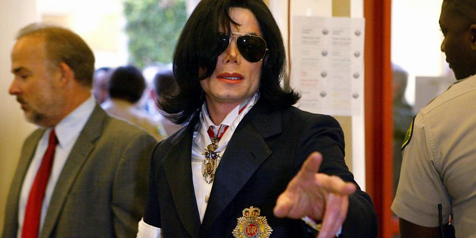
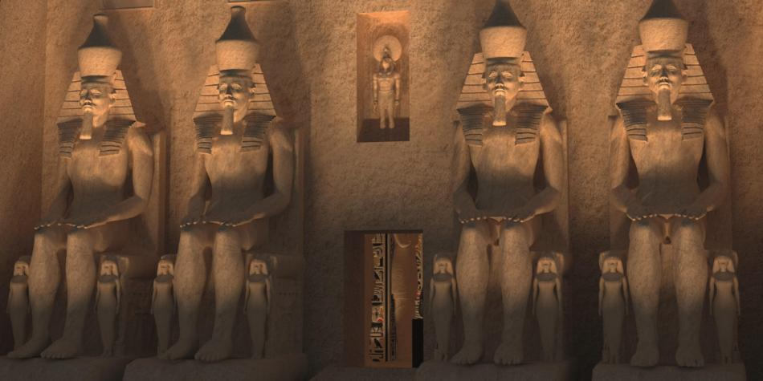

Lenny Kravitz: listo para su concierto de este sábado en Bogotá
Más que canciones son largos himnos, llenos de reflexiones y experimentaciones sonoras. Para su nuevo álbum, 'Raise Vibration', el músico Lenny Kravitz se la jugó por crear temas que se extienden hasta por siete y ocho minutos, entrando en una carretera de libertad creativa por la que se mueven varios ritmos musicales y pensamientos muy íntimos. En una de ellas, Kravitz canta: “Solo abrázame como Johnny Cash / Cuando perdí a mi madre / Susúrrame en el oído / Como June Carter”.
La canción se llama 'Johnny Cash' y podría indicar que Kravitz le rinde tributo a la leyenda de la música country, pero realmente recuerda un doloroso momento: en 1995, el intérprete de 'American Woman' y 'Are You Gonna Go My Way?' vivía en la casa de Cash y de su esposa, June Carter, justo cuando su madre estaba en las últimas etapas de una batalla contra el cáncer. Un día, cuando regresaba a esa casa luego de acompañarla en el hospital, recibió la llamada que anunciaba su muerte. Cash y Carter fueron testigos de esa noticia y lo consolaron.
Cinco planes de cultura y entretenimiento en el fin de semana
Estas son las exigencias de Lenny Kravitz para su concierto en Bogotá
La banda Primus ya está lista para tocar en Bogotá
'Raise Vibration' combina temas que van de esta trascendencia personal a canciones más sociales y políticas, como 'It’s Enough', una protesta directa contra el racismo.
Bogotá será la primera ciudad que Kravitz visite este año en el marco de su gira mundial del disco, lanzado en septiembre pasado. Kravitz habló con EL TIEMPO sobre la que será su primera presentación en Colombia –el 23 de marzo, en el Movistar Arena– y acerca de su nuevo trabajo.
Usted buscaba ser muy auténtico consigo mismo con este álbum, ¿cree que lo logró?
Absolutamente, esa es la única manera como sé hacerlo, cada álbum que hago es quien soy en ese momento. Y no tengo elección en eso, es la manera como trabajo, es un proceso muy orgánico, y no puedo mentir cuando se trata de eso. Así que sí, cuando estaba haciendo 'Raise Vibration' fue una representación exacta de mí en ese momento.
El sonido es muy potente, logra combinar de una manera muy orgánica rock, 'funk', 'blues' y 'soul'…
Gracias, gracias. Quiero decir, amo la música, no me preocupo por las categorías y toco lo que sea que se necesite tocar para expresar esa canción. Así que mezclar muchos estilos diferentes es muy natural para mí.
También hay una exploración sonora; por ejemplo, ¿por qué decidió trabajar con sonidos nativos norteamericanos y góspel?
La canción me lo dicta, me dice qué necesita, yo solo escucho… Al final de 'Raise Vibration', que es el tema del que hablas con los sonidos nativos, la canción lo necesitaba, yo lo podía escuchar así no estuviera allí... Unos increíbles músicos las interpretan, además tocan los tambores nativos. Ellos hicieron exactamente lo que se necesitaba y complementaron la canción, complementaron lo que se estaba expresando.
¿Por qué decidió usar la voz de Michael Jackson en la canción 'Low'?
Michael y yo trabajamos hace 20 años cuando escribí y produje una canción para él, 'Another Day'. Trabajamos en diferentes cosas en ese momento, tenía algunos cantos que quedaron y simplemente sentí la presencia de Michael Jackson en 'Low' y quería su voz ahí. Así que busqué algunas de las grabaciones que habíamos hecho y encontré los coros que estaban en sintonía con lo que estaba haciendo, los puse ahí y obtuve el permiso de su testamentaría y de su familia. Es hermoso tenerlo en esta canción, yo lo amé y lo respetaba mucho.
También la presencia, la influencia de Prince es muy importante en este álbum...
No sé, solo hago lo que sé hacer… Pero, definitivamente, sentí su presencia cuando estaba haciendo este álbum, sentí su presencia luego de que se muriera (junio del 2016). No diré mucho sobre esto, pero éramos amigos, nos conocimos por muchos años, nos amábamos y nos respetábamos. Él significó mucho para mí.
¿Cómo fue el proceso para crear 'Johnny Cash', una canción tan personal?
Todas son personales, pero todas las canciones de este álbum me fueron entregadas en sueños; así que soñé esa canción. Fueron como hermosos regalos que me llegaban, me despertaba en la mitad de la noche con esa música en la cabeza, y aprecio mucho que me hubieran llegado… Siento como si me hubiera expresado honesta y apasionadamente, estoy muy orgulloso de este trabajo.
El mundo, la vida; quiero decir, vivimos en un mundo loco, gobernado por el odio y la rabia, y eso es muy triste. Creo que es muy difícil no reflejar lo que está pasando, y fue algo muy natural para mí... Todas las canciones hablan sobre mis emociones, ya sea que fuera algo que me pasó personalmente a mí o algo en el mundo que sea político o social; todo es personal. Es muy fácil, yo no me escondo, cuando me expreso a través de la música soy muy transparente.
Todas las canciones de este álbum me fueron entregadas en sueños Usted interpretó todos los instrumentos durante el proceso de grabación. ¿Fue algo que se dio naturalmente?
Absolutamente, he venido haciendo eso toda mi carrera. Me encanta tocar instrumentos, me alegra tener la habilidad para hacerlo porque me permite expresarme en una forma muy directa con todos los instrumentos.
¿Realmente cree que el rock and roll está muerto?
Nunca está muerto, sé que lo dije, pero era un contexto diferente. El rock and roll está vivo y siempre lo estará sin importar qué pase, sin importar cuáles son las tendencias o qué estén pasando en la radio. El rock and roll es extremadamente poderoso.
¿Dónde y cuándo?
23 de marzo, 9 p. m. Movistar Arena. Boletas desde 95.000 hasta 600.000 pesos. Informes en TuBoleta.com. Por pedido del artista, los menores de 12 años podrán acudir al concierto.

Conozca el lado mítico del ‘Asombroso Hombre Araña’
No muchos lo saben, pero Spider-Man estuvo a punto de no pasar de ser una idea porque al jefe de Marvel le parecía que la creación de los hoy legendarios Stan Lee y Steve Ditko estaba condenada a sucumbir ante un hecho preocupante: la gente les tiene miedo a las arañas.
Pero el enmascarado trepamuros sobrevivió y en más de 700 ediciones ha demostrado el potencial de mantenerse tan desesperadamente original como lo soñaron sus creadores.
En ese vasto paisaje, no es exagerado decir que 'Volviendo a casa' marca uno de los capítulos más polémicos en la larga historia del Hombre Araña. Es apropiado que abra también la colección de novelas gráficas que desde este viernes publica EL TIEMPO.
Endgame no es el final: estas son las películas que sacará Marvel
Vea el tráiler oficial de 'Spider-Man: lejos de casa'
Marvel's Spider-Man le hace justicia a su ‘amigable vecino’
Todas las manos por las que ha pasado el codiciado teseracto
Después de reiterar hasta la saciedad el componente científico detrás de los poderes del amigable vecino, la saga llegó desgastada al nuevo siglo, y les correspondió al escritor J. Michael Straczynski y el ilustrador John Romita Jr. inyectarle nueva vida.
Straczynski, a quienes las nuevas generaciones probablemente recuerden como creador, junto con Andy y Lana Wachowski, de la serie de Netflix Sense8, echó mano de un elemento que nunca antes jugó un papel en la historia de Spidey: el mítico.
Fue una movida osada, pero muchos temieron que echara por tierra el elemento científico que define al Hombre Araña (y, de hecho, a muchos de sus villanos). Lo cierto es que, cuando las apuestas llegan a su punto máximo, es la ciencia la que viene al rescate, y Spidey honra al nerd que es, que siempre ha sido.
Straczynski sortea con acierto el problema al plantear más preguntas que respuestas: “¿La radiación capacitó a la araña para darle a Peter Parker sus poderes? ¿O la araña estaba intentando darle los poderes antes de que la radiación la matara?”. En este diálogo entre dos personajes se plantea así un intrigante acertijo del huevo y la gallina que mantiene la trama mientras Spider-Man enfrenta a un enemigo aparentemente indestructible.
El pobre Peter Parker
También fue osado mostrar la cotidianidad de un Peter Parker que dejó atrás la adolescencia y llega a este momento con el peso de la treintañez y una sucesión de pérdidas en su vida, la mayor de ellas la de su esposa, Mary Jane. Agobiado por su pasado, Parker debe alternar la mundana realidad de postularse a un puesto como profesor de ciencias en su vieja escuela secundaria con tareas heroicas como salvar a neoyorquinos en peligro en un edificio que se incendia.
No es, ni mucho menos, perfecto, pero este arco, compuesto por los números del 30 al 35, es el primer paso en un camino que revitalizó al héroe arácnido y permitió explorar nuevas posibilidades. No obstante su nombre, 'Volviendo a casa' no tiene nada qué ver con la historia de la película de 2017, titulada Homecoming, excepto por un detalle genial en la última escena, que no revelaremos aquí por no comenzar usando las alertas de spoiler.
Pero si la corajuda visión de Straczynski revitalizó una propiedad cansada, el aporte de Romita Jr. le dio la oportunidad de poblar las páginas con una fuerza y un dinamismo que terminaron marcando una época. En combinación con los diálogos de un escritor que entiende a la perfección la naturaleza sarcástica y descomplicada del héroe, logra visos cinematográficos que resaltan por igual las secuencias de acción y los momentos de desesperanza, cuando todo parece perdido. Es cierto que el villano no se aleja mucho de la fórmula del Big Bad, pero cuando se queda corto, el héroe ofrece personalidad de sobra.
Nada mal para un amigable vecino que por poco no pasa de la mesa de dibujo.
La colección de novelas gráficas
Desde este viernes, El TIEMPO Colecciones trae la Colección Definitiva de Novelas Gráficas Marvel. Son 60 libros en tapa dura que recopilan los más importantes arcos de la historia de esta, la casa de los héroes.

Un poema escénico sobre el duelo
Rodeados de la oscuridad de la escena y las tinieblas metafóricas de una dolorosa pérdida, Nata y Toto se encuentran en un parque para enfrentar un tortuoso camino.
Ellos son los protagonistas de la obra Lo que queda de nosotros, dirigida por el mexicano Alejandro Ricaño, que se presenta este domingo en el Teatro ABC, de Bogotá. La pieza, que Ricaño escribió junto a Sara Pinet, se adaptó en Colombia con las actuaciones de Carolina Ramírez y Carlos Torres.
Es una nueva ventana al universo dramatúrgico del mexicano Alejandro Ricaño, de quien en Colombia se han visto obras como El amor de las luciérnagas, Más pequeños que el Guggenheim, Fractales y el monólogo Cada vez nos despedimos mejor, protagonizado por el actor Diego Luna.
Aquellas historias planteaban universos llenos de crisis o duelos, que el dramaturgo asumía con líneas evocadoras y llenas de una poética conmovedora.
Aquí el duelo atraviesa como una afilada daga la vida de Nata, quien perdió a su madre cuando era muy pequeña y, ahora, en su adolescencia, tiene que transitar de nuevo por ese infierno ante la muerte de su padre.
Su elección para evitar tanto dolor es cortar todos los vínculos sentimentales, por eso decide que debe abandonar a su perro, Toto.
'Dejé los guayos y el fútbol por las zapatillas de ballet'
Subastarán fotos inéditas de Frida Kahlo
El grupo teatral Quinta Picota empieza a celebrar sus diez años
Un monólogo sobre la vida y el amor.
Ricaño apuesta así por una historia profundamente íntima, en la que explota ese estilo de teatro narrado que se ha vuelto una marca de su cosecha personal.
“Es un momento contado desde dos perspectivas, la de la niña adolescente que pierde a sus papás y la del perro que abandona. La historia cuenta eso, la travesía de los dos por volverse a encontrar entre ellos y, en el caso de Natalia, también a sí misma, para reconciliarse con ella, con su dolor, con la muerte de sus papás”, asegura Ricaño.
En trabajos anteriores, Ricaño había cogido como punto central la figura del narrador omnisciente, que luego despedazaba para construir una diversidad de miradas sobre el mismo personaje. En El amor de las luciérnagas, por ejemplo, la protagonista, María, era encarnada por tres actrices que representaban etapas diferentes de su vida.
En esta ocasión, apostó por una narración más directa, con solo las voces de Nata y Toto, que van contando todos los momentos que tuvieron que atravesar para llegar a ese parque.
Aunque sus piezas usualmente se desarrollan en locaciones rurales de su país, Ricaño crea y habla sobre arquetipos que pueden ser consumidos y entendidos por públicos de otros lugares. “Yo no creo que esté alcanzando la universalidad, pero sí creo que estoy hablando con una generación latinoamericana que, de alguna manera, ha compartido muchísimas realidades. Y también el dolor es completamente universal”, asegura Ricaño.
El artista mexicano ya había trabajado con Ramírez en el montaje colombiano de El amor de las luciérnagas, por lo que ya conocía su proceso creativo. Con Torres, en cambio, la experiencia fue diferente, pues es la primera vez que el actor trabaja en teatro –Ramírez y Torres fueron los protagonistas de la serie La reina del flow.
Ricaño cuenta que el actor se esforzó mucho, e incluso sufrió para este trabajo, pues, además de debutar en la escena, interpreta a un perro, lo que tiene una particular exigencia física.
“Fue una cuestión de entender qué imagen carga cada palabra, cuál es el motor de cada uno de los personajes, qué perciben, qué lucha interior llevaban. Montamos la obra rapidísimo y creo que eso ayudó a que el texto no perdiera inmediatez con el actor”, añade el mexicano.

Hija de Diana Turbay: 'Pensé que no superaría la pérdida de mi mamá'
Me encontraba almorzando en un restaurante cuando escuché la noticia por televisión. Aunque la información era confusa, los medios decían que habían rescatado a Diana Turbay y que estaba herida.
Salí corriendo para el aeropuerto y tomé el primer vuelo a Medellín. Aún hoy, tantos años después, tengo recuerdos pavorosos de esa carretera de Las Palmas, a donde bajaba en un taxi acompañada de Piedad Holguín Sardi, la esposa de mi papá. El conductor, como muchos en Colombia, escuchaba las noticias de la liberación de mi mamá. Pedían sangre con urgencia, decían que estaba grave, y yo temía lo peor.
Acababa de cumplir 18 años, y desde que secuestraron a mi mamá tenía mi vida en pausa. Todo lo posponía: las celebraciones, las decisiones, el estudio, esperando que ella volviera. Cuando entré al hospital y supe que había muerto, mi vida, como la conocía, dejó de existir. Pensé que no iba a superar un dolor tan grande, pero es ahí, en esos momentos de enorme pérdida, donde comprendemos quiénes somos.
Creo que a lo largo de mi vida, como cualquier otra persona, he sufrido y he reído. He perdido seres queridos y he visto nacer a otros. Y siempre, en todas las situaciones, trato de aprender. Así duela infinitamente, así me equivoque en el proceso –porque no todas las decisiones que he tomado han sido acertadas–, así a veces me sienta sola en el camino. No tengo mi vida resuelta, pero lo que sí resolví fue no quedarme detenida en el dolor o en la pena, sino sacar una enseñanza de cada cosa que ocurre en la vida y seguir adelante. Cuando comencé a bucear, aprendí que, en todo, el buceo es como la vida. Para empezar, es el único deporte que no se puede practicar de manera individual.
Uno pensaría que el fútbol tampoco, pero en el fútbol se ven individualidades, mientras que en el buceo no. Bajo el agua es cuando en realidad se aprende a jugar en equipo para sobrevivir. A ayudarse, a acompañarse. Como la vida. Si uno no tiene con quien celebrar sus triunfos, ¿valen la pena? Si uno no tiene con quién llorar sus tristezas, ¿es capaz de superarlas? El apoyo, la ayuda, el amor son la base de todo. Crear equipo, evitar el individualismo, trabajar por un bien común. Y, además, el buceo te da pequeñas lecciones cotidianas para resolver los problemas. Parece increíble, pero si uno identifica diferentes señales del buceo, y aprende su significado, puede aplicarlas a la vida, y eso es lo que yo hago, y hasta ahora han tenido una eficiencia sorprendente.
Una de las primeras lecciones que aprendí en el buceo fue la de respirar. Afuera, en la superficie, no somos conscientes del acto cotidiano de respirar. Lo damos por sentado, nos parece algo normal. Pero abajo no solo se escucha la respiración, sino que un buzo debe saber cuándo soltar aire para volver a aspirar. Dejar ir una cosa para agarrar otra nueva. Así es la vida, como el buceo. Hay que aprender a soltar, hay que empezar a dar y ser consciente de que solo entregando se puede recibir.
Pero, como en la vida, en el buceo también hay dificultades que es necesario resolver. Una de las señales más importantes que se aprenden al bucear es “bajo de aire”. La falta de oxígeno puede hacer que el buzo entre en pánico y quiera subir a la superficie enseguida, pero al no hacer la descompresión correctamente, puede morir. Por eso, un buzo que está bajo de aire debe buscar una opción, calmarse, crear un plan de navegación que le permita salir del agua. Al igual que el buceo, la vida tiene estas situaciones. A veces, uno siente que se ahoga, que no puede respirar. Y es ahí donde uno necesita buscar opciones, trazar un plan de vida. Así me ocurrió a mí. Ese plan de vida, ese camino, lo comencé a recorrer –aún sin saberlo– el 25 de enero de 1991, cuando asesinaron a mi mamá.
Entré a ver su cuerpo cuando todavía estaba en la sala donde habían tratado de salvarle la vida. Lo primero que miré fueron sus pies. Estaban lacerados, llenos de cortadas, producto de su huida por el monte. Me impactó mucho verlos porque era en lo que más nos parecíamos, en los pies. Y los de ella mostraban todo el sufrimiento que había tenido durante los meses de cautiverio.
Mi mamá era una mujer hermosa, pero en su pelo largo y descuidado y en su rostro se veía cómo la transformaron los meses de cautiverio y todo el dolor que sintió. Fue tanta mi tristeza que, frente a su cuerpo sin vida, hice la promesa de no volver a sonreír. Por fortuna no la cumplí, pero pasó mucho tiempo antes de que tuviera el valor de romper aquel juramento que emití cuando vi sus pies, cuando vi su cara irreconocible, cuando me di cuenta de lo sola que me había quedado.
Lo primero que hice fue preguntarme: ‘¿Por qué yo?’ Pero en retrospectiva puedo ver que la vida me preparó para ese momento, y ahora me doy cuenta de que de ahí se derivan las grandes lecciones que me han permitido seguir adelante y ser una persona exitosa a pesar de las adversidades.
Mi infancia fue bastante particular. Al mes de nacida, mis papás me llevaron una tarde donde mis abuelos maternos. Bogotá era en ese entonces una ciudad distinta. Llovía más, hacía más frío. Ese día, según me cuentan, estaba lloviendo, y mi abuela Nydia le dijo a mi mamá que me dejaran en su casa, que no convenía sacar a un bebé a la calle con semejante clima. Mis papás entonces se devolvieron a su apartamento y yo me quedé en manos de mi abuela durante varios días. Ahí comenzó una relación que aún hoy es una piedra angular de mi vida.

Hijos de Michael Jackson no son suyos, son de un donante de esperma
Michael Jackson había acabado de separarse de Lisa Marie Presley y, tres meses después, se casó en Sydney, Australia, con la asistente de enfermería Debbie Rowe, de 37 años, solo un año menor que él.
Del matrimonio, que duró entre 1996 y 1999, nacieron tres hijos: Paris Michael, Prince Michael I y II.
Según recogió el medio británico The Sun, Debbie Row, exesposa de Michael Jackson, confesó que la pareja nunca sostuvo relaciones sexuales y que dos de los hijos que tuvieron son producto de un proceso de inseminación artificial al que se sometió.
En más de una ocasión, la paternidad de Jackson ha sido cuestionada, debido a que los hijos son blancos y tienen ojos azules.

Egipto y sus misterios ahora forman parte del parque Mundo Aventura
En 1922, el arqueólogo y egiptólogo Howard Carter hizo un gran descubrimiento: la tumba del niño rey de Egipto, Tutankamón.
La tumba "única en su tipo" que fue descubierta en Egipto y que estuvo intacta por 4.400 años
El Gran Museo Egipcio: moderna arca que alberga 5.000 años de historia
Salvada casi en su totalidad de los saqueos comunes durante 3.300 años, Carter y su equipo pudieron observar una tumba perfectamente conservada que le entregó no solo a Egipto, sino a la humanidad, un gran retazo de historia.
Ahora se podrán ver en Colombia los secretos de Tutankamón, representados en 93 réplicas de sarcófagos, esculturas, jeroglíficos, joyas, objetos y otras piezas que fueron elaboradas en Egipto y cuyo peso es de 40 toneladas.
La muestra se llama ‘El museo egipcio de Tutankamón’ y desde el 27 de marzo estará abierta al público en el parque Mundo Aventura de Bogotá, donde permanecerá por tres meses, para luego continuar a Medellín y otras ciudades.
Con un espectáculo de mapping con imágenes holográficas en 3D –trabajo realizado en Colombia–, la exposición se realiza con el apoyo de la República Árabe de Egipto en el país, y para preservar las piezas se mostrará en un recinto cerrado que mide 600 metros cuadrados.
El curador es Faisal Said Ahmad, profesor asociado de escultura, arquitectura y restauración de la Universidad de Damieta, en Egipto, quien es el director del montaje y estará en Bogotá para el lanzamiento.
La tumba original, conocida como la KV62, está situada en el Valle de los Reyes (Egipto) y tiene cuatro salas. El estudio de Carter fue tan detallado que su equipo se demoró ocho años en sacar las más de 5.000 piezas que albergaba, incluida la máscara funeraria de Tutankamón, hecha de oro macizo.
La exposición también cuenta cómo era la cultura religiosa y artística de Egipto hace casi 3.400 años (Tutankamón murió en el 1.232 a. C).
Juan Carlos Rosas, director de Mercadeo de Corparques, a cargo de Mundo Aventura, dice que “la novedad de esta atracción comienza por su vistosa entrada, que será visible desde el exterior del parque y es una representación de gran formato del templo de Abu Simbel, una de las estructuras del antiguo Egipto, declarada patrimonio de la humanidad por la Unesco en 1979”. Este templo se construyó, aproximadamente, en el siglo XIII a. C.
La muestra estará abierta martes a jueves de 10 a. m. a 6 p. m., y de viernes a domingo y festivos de 10 a. m. a 7 p. m. Mundo Aventura queda en la carrera 71D con calle 14 sur, en Bogotá. Informes en el teléfono 4142700 y en mundoaventura.com.co. Boletas: niños, 25.000 pesos; adultos, 30.000 pesos.